Giriþ
Plastik enjeksiyon ile üretilen parçalarýn maliyetleri gerek parça, gerek kalýp tasarýmýnda alýnan kararlar ile þekillenmektedir. Yapýlan araþtýrmalar, tasarýmýn ilk evrelerinde verilen mühendislik kararlarýnýn parça maliyetini 70%-80% arasýnda etkilediðini göstermektedir.
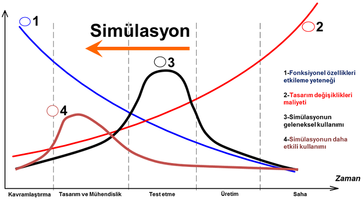
Þekil 1 Tasarým ve Simülasyonun Etkileþimi |
Simülasyon, tasarýmýn ilk evrelerinde, henüz ortada bir fiziksel prototip bulunmadan karar vericilere saðladýðý bilgiler ile, ileride oluþacak maliyetlerin minimum düzeye indirilmesine yardýmcý bir teknoloji olarak öne çýkmaktadýr.
Bu çalýþmada, iþletmelerin plastik enjeksiyon maliyetlerini azaltmaya yönelik bir çalýþma “Design of Experiment (DOE) Analysis” metodundan faydalanýlarak gerçekleþtirilmiþtir. Örnek bir üretim için 2 farklý proses parametresinin optimum (en iyi) deðerleri sayýsal modelleme kullanýlarak tespit edilmiþtir. Analiz sonuçlarý ile, mevcut olan üretim þartlarýnda önemli iyileþtirmeler saðlanabileceði görülmüþtür.
Plastik Enjeksiyon ile Üretim
Plastik enjeksiyon, basýnç ve sýcaklýk yardýmý ile eritilmiþ plastik malzemenin bir kalýp içine enjekte edilerek þekillendirilmesi ve soðutularak kalýptan çýkarýlmasýný içeren bir üretim yöntemidir. Polimer adý verilen çoklu molekül yapýsýna sahip plastik malzemeler “Termoplastik” ve “Termoset” olarak iki grupta incelenir.
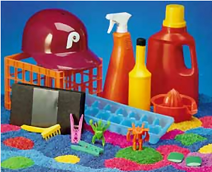
Þekil 2 (a) Termoplastik malzemeyle üretilen ürünler |
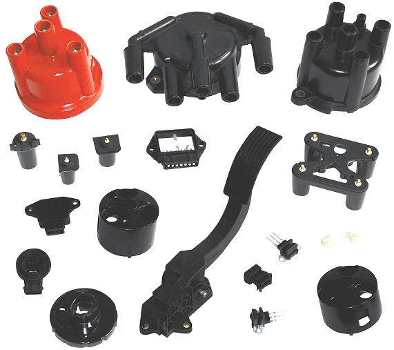
Þekil 2 (b) Termoset malzemeyle üretilen ürünler |
Kullaným alanlarýna göre seçilen bu plastik türlerinin özelliklerinden bahsetmek gerekirse,
Termoplastik malzemeler;
- Yüksek sýcaklýklara dayaným gösteremezler, sertlik, mukavemet gibi özelliklerini kaybederler,
- Isýtýldýðýnda yumuþar, soðutulduðunda sertleþirler,
- Yaklaþlýk %70 oranýnda geri dönüþüm özelliðine sahiplerdir.
Termoset malzemeler;
- Yüksek sýcaklýklara dayaným gösterirler, sertlik, mukavemet gibi özelliklerini korurlar,
- Isýtýldýðýnda yumuþama olmaz, ancak yüksek sýcaklýklara ulaþýldýðýnda yanmaya baþlarlar,
- Geri dönüþüm özelliðine sahip deðillerdir.
Günümüzde hemen hemen her alanda plastik malzeme kullandýðýmýz gibi, plastik ürünlerin birçoðu da enjeksiyon yöntemi kullanýlarak üretilmektedir. Otomotiv, denizcilik, savunma sanayi, elektronik eþya gibi birçok sektörde çok çeþitli ebat ve kategorilerde plastik parçalar bu yöntemle üretilmektedir. Üretimin gerçekleþtirildiði makineye “Plastik Enjeksiyon Makinesi” ismi verilir ve ilk plastik enjeksiyon makinesi 1930'lu yýllarda yapýlmýþtýr.
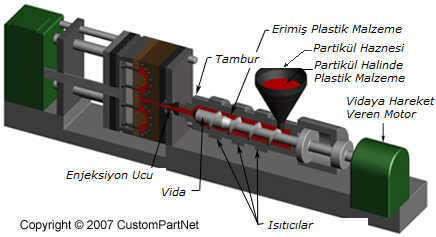
Þekil 3 Plastik Enjeksiyon Makinesi |
Bir enjeksiyon makinesi temel olarak üç ana bölümden oluþur, bunlar: Kapama Ünitesi (mengene), Enjeksiyon Ünitesi ve Kalýp Ünitesi'dir. Basit olarak incelendiðinde bir plastik enjeksiyon parçasýnýn imalat süreci þu aþamalardan oluþur:
Malzemenin makineye koyulmasý
Granül halindeki malzeme, makineye enjeksiyon ünitesi üzerindeki hazneden eklenir.
Enjeksiyon
Malzeme rezistanslý ýsýtýcýlar ile ýsýtýlan silindir içine, elektrik motoru ile kumanda edilen bir vida vasýtasý ile alýnýr. Vida dönerken sýkýþtýrma iþlemi yaparak sýcaklýk ve basýnç altýnda eriyik hale gelen malzemeyi silindirin sonuna kadar ilerletir. Vidanýn önüne kalýbý doldurmak için yeterince malzeme alýndýðýnda enjeksiyon iþlemi baþlar. Erimiþ plastik, makinenin ucundaki bir meme vasýtasý ile kalýbýn içine gönderilir. Bu iþlem esnasýndaki basýnç ve hýz hidrolik vida ile kontrol edilir.
Ütüleme
Parçanýn istenen ölçülerde olmasý ve görünümünde çeþitli hatalar (çöküntü, yamulma, eðilme, vs.) olmamasý için ütüleme iþlemi uygulanýr. Bu aþamada kalýp içine enjekte edilmiþ olan plastik eriyiðin, basýnç uygulanarak kalýp boþluðunu iyice doldurmasý saðlanýr. Plastik malzeme, kalýptaki soðutucular yardýmýyla katý hale gelinceye kadar iþlem devam eder. Kullanýlan hammaddenin özelliðine, parça ebatlarýna ve malzeme miktarýna baðlý olarak iþlemin süresi deðiþkenlik gösterir.
Soðutma
Enjekte edilen eriyik hammaddenin soðuyarak kalýbýn içinde sertleþmesi süreci soðutma adýmýný oluþturur. Kalýbýn soðutulmasý, kalýp içindeki soðutma kanallarý vasýtasýyla yapýlýr. Soðutma için su veya yað kullanýlmaktadýr.
Kalýp açma
Kapama ünitesi kalýbýn iki tarafý ayrýlacak þekilde açýlýr.
Çýkarma
Kalýp tipine göre maçalar veya iticiler vasýtasý ile bitmiþ parça kalýptan çýkarýlýr.
“Üretim Þartlarý”nýn belirlenmesi
Çalýþmamýzda, mevcut olan üretim þartlarýndaki deðerlerin üretimi nasýl etkilediði ve optimum deðerlerin üretime saðlayacaðý katkýlar hakkýnda öncelikle bilgi edineceðiz. Bu çalýþma için örnek parçamýz bir otomobil kapý kulpu yuvasý olup, Þekil 4'te gösterilmiþtir.
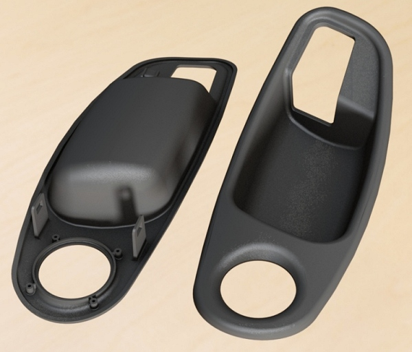
Þekil 4 Üretimi yapýlacak olan kapý kulpu yuvasý (Autodesk Showcase Kullanýlarak) |
Ýlk adýmda tasarýmý CAD modeli olarak elde edilen parça, belirli ön iþlemler (preprocessing) ile analize hazýrlanmalýdýr. Bu ön iþlemler, geometrinin örülmesi (mesh atýlmasý), malzeme deðerlerinin girilmesi ve proses koþullarýnýn tanýmlanmasýný içermektedir. Uygun üretim þartlarýný belirlemek için ilk adým enjeksiyon giriþ(ler)inin belirlenmesidir. Bilindiði üzere kaliteli bir üretim için enjeksiyon giriþlerinin en iyi þekilde konumlandýrýlmasý ve boyutlandýrýlmasý gerekmektedir. “Autodesk Simulation Moldflow Insight” yazýlýmý ile en iyi enjeksiyon giriþ bölgeleri otomatik olarak belirlenebilmektedir. Örnek parça için yapýlan “Enjeksiyon Giriþ Konumu Uygunluðu” (Gating Suitability) sonucu Þekil 5’te gösterilmiþtir.
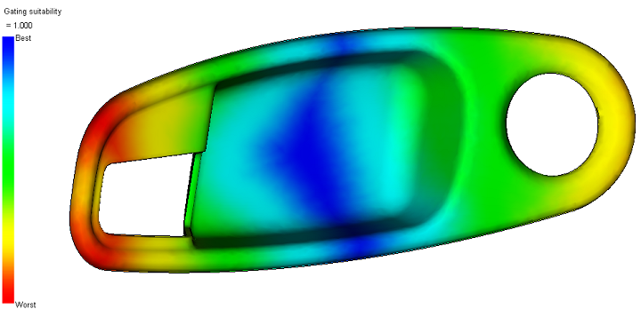
Þekil 5 “Gating Suitability” sonucu |
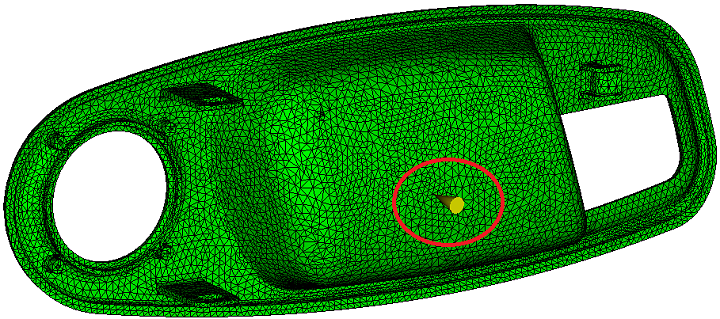
Þekil 6 Enjeksiyon Giriþi Konumu |
Analiz sonucu elde edilen en iyi giriþ noktasý mavi renk ve civarý olarak görülmüþtür. Yine örnek parça üzerinde, kulp yuvasýnýn orta bölgesi giriþ için en uygun konumdur. Bu ilk analiz sonrasýnda enjeksiyon giriþi Þekil 6’da iþaretlendiði gibi parçanýn arka tarafý/orta kýsmýna yerleþtirilmiþtir.
Parçanýn basýlmasýnda kullanýlacak malzemesinin cinsine göre kalýp sýcaklýðý, eriyik sýcaklýðý ve enjeksiyon süresi gibi proses deðerleri “Molding Window” analizi ile tanýmlanabilir. Parçanýn üretimi için optimum deðerler bu analiz tipi ile hesaplanabilir. Söz konusu örnek çalýþma için elde edilen deðerler Tablo 1’de belirtilmiþtir.
Tablo 1 Molding Window analizi sonuçlarý
| Kalýp yüzeyi sýcaklýðý (oC) |
62.22 |
Eriyik sýcaklýðý (oC) |
255.79 |
Enjeksiyon süresi (s) |
0.56 |
Kalite kriterleri dahilinde, uygun proses deðerleri elde edildikten sonra “Optimizasyon Analizi” kurulabilir. Proses ayarlarý için: kalýp yüzeyi sýcaklýðý 62oC, eriyik sýcaklýðý 255 oC ve enjeksiyon süresini 0.55s olarak belirlenmiþtir. Optimizasyon çalýþmasýndan kullanýlacak DOE tablosu “Variable Responses (Face Centered Cubic)” yöntemi seçilerek oluþturulmuþtur. Belirlenen deðiþken girdi deðerlerinin sonuçlara olan etkisinin tanýmlanmasý için deðerler birbirinden baðýmsýz kalacak þekilde daðýtýlmýþtýr.
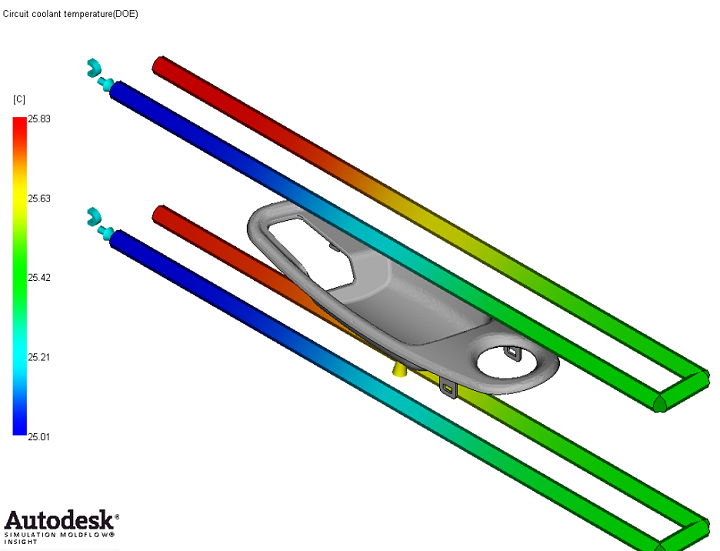
Þekil 7 Soðutma Kanallarý ile Birlikte Modellenmiþ Kalýp Boþluðu ve Soðutma Sývýsý Sýcaklýk Daðýlýmý |
“Input” ve “Output” parametreleri, belirlenen optimizasyon çalýþmasýnýn tanýmýný oluþturmaktadýr. Hangi girdi deðerlerinin, hangi sonuçlarý etkiliyeceði bu adýmda belirlenerek optimizasyon problemi tanýmlanýr. Enjeksiyon ile üretimde minimize edilmek istenen üretim maliyeti, çevrim süresi(cycle time) ve mengene kuvveti(clamp force) etkileri ile tanýmlanmýþtýr. Belirli sürede daha fazla parçayý düþük tonajlý bir makine ile basmak, gerek ilk yatýrýmýn, gerekse sürekli yatýrýmlarýn en aza indirilmesi olarak tanýmlanabilir.
Tablo 2 Optimizasyon ayarlarýndan “Input” ve “Output” deðerleri
| Input (Girdi Deðerleri) |
Output (Çýktý Deðerleri) |
Eriyik Sýcaklýðý |
Çevrim Süresi (Cycle Time) |
Enjeksiyon Süresi |
Soðutucu Kanal 1 - Soðutucu Akýþkan Sýcaklýðý |
Mengene Kapama Kuvveti (Clamp Force) |
Soðutucu Kanal 2 – Soðutucu Akýþkan Sýcaklýðý |
Optimizasyon algoritmalarý tekil amaç(single objective) ve çoklu amaç(multi objective) olarak ayrýlmaktadýr. Analizi gerçekleþtirdikten sonra elde ettiðimiz sonuçlarda “Mengene Kuvveti” ile “Çevrim Süresi” deðerlerinin minimize edilmesi iki ayrý kriter olarak belirlenmiþtir. Bu þekli ile yapýlan çalýþma çoklu amaç (multi objective) optimizasyona bir örnektir.
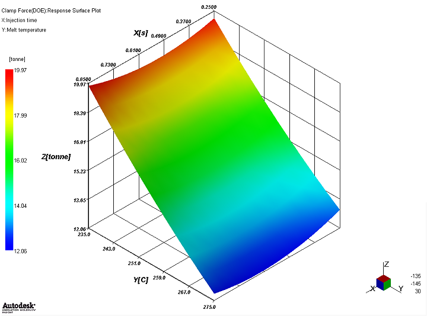
Þekil 8 Enjeksiyon Süresi ve Eriyik Sýcaklýðý’nýn Mengene Kuvveti’ne olan etkisi |
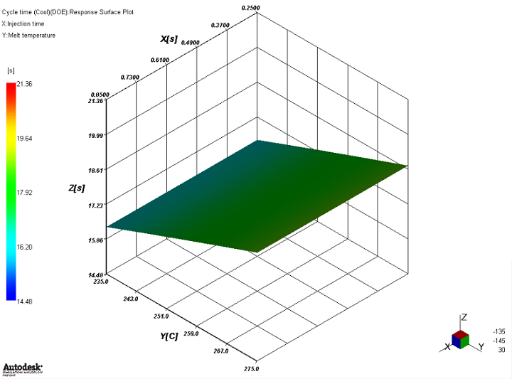
Þekil 9 Enjeksiyon Süresi ve Eriyik Sýcaklýðý’nýn Çevrim Süresi’ne olan etkisi |
Þekil 8 ve 9’de görüldüðü üzere, minimize edilmek istenen iki çýktý deðeri birbiri ile çeliþen þekilde deðiþmektedir. Bu gibi durumlarda tek bir optimum noktadan ziyade, optimum yüzeylerden bahsedilebilir. Literatürde “Pareto Frontier” olarak adlandýrýlan bu yüzey tüm optimum noktalarýn toplamýndan oluþmaktadýr.
Tablo 3 - Proses Parametrelerinin “Mengene Kuvveti” ve “Çevrim Süresi”ne olan etkisi
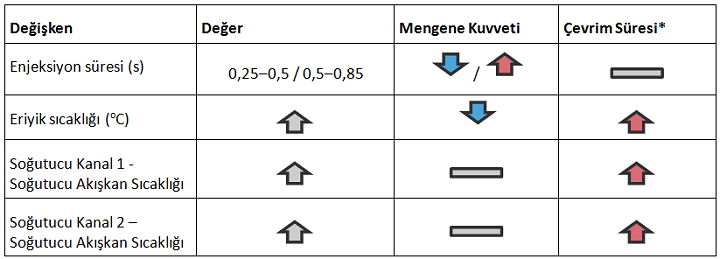
* Enjeksiyon Süresi’nin Çevrim Süresi’ne olan etkisi ihmal edilecek ölçüde olduðu için, Çevrim Süresi’nin deðiþmeyeceði kabul edilmiþtir.
Tablo 3’de görüldüðü gibi, enjeksiyon süresi ile eriyik sýcaklýðý, mengene kuvveti ile çevrim süresini farklý þekillerde etkilemektedir. Enjeksiyon süresi 0,25-0,5 s aralýðýndayken, mengene kuvveti azalmakta, 0,5-0,85 s aralýðýndayken ise mengene kuvveti artmaktadýr. Ayný zamanda, eriyik sýcaklýðý artarken mengene kuvveti azalmakta, bu sefer de çevrim süresi artmaktadýr. Üretimin en verimli þekilde gerçekleþmesi için, bu deðerlerin ortak noktalarýnýn bulunup optimum þartlarýn saðlanmasý gerekir.
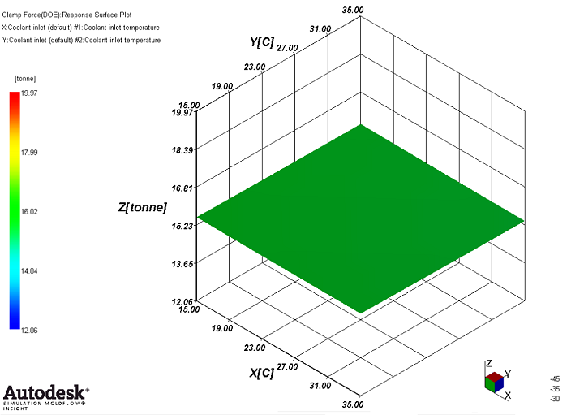
Þekil 10 Soðutma Sývýsý Giriþ Sýcaklýklarý’nýn Mengene Kuvveti’ne olan etkisi |
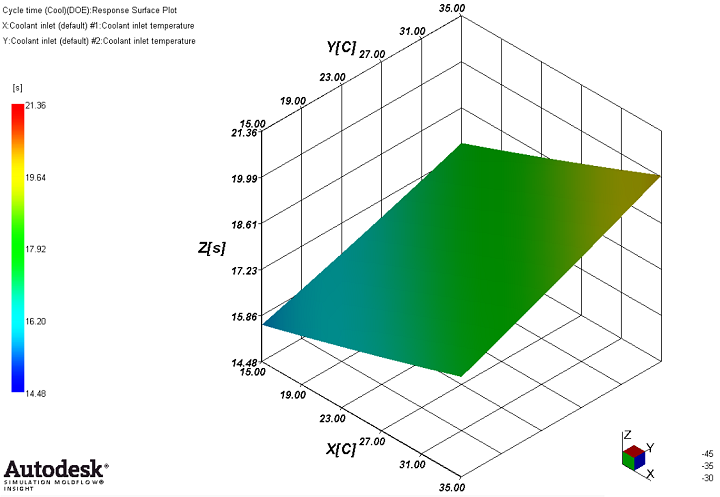
Þekil 11 Soðutma Sývýsý Giriþ Sýcaklýklarý’nýn Çevrim Süresi’ne olan etkisi |
Þekil 10’da verilen soðutma sývýlarýnýn sýcaklýðýna baðlý mengene kuvveti grafiði, mengene kapama kuvvetinin soðutmadan etkilenmediðini göstermektedir. Þekil 11 ise soðutma sývýlarý giriþ sýcaklýklarý ve çevrim süresi arasýndaki doðru orantýyý belirtmektedir.
Çýktý deðerlerinin ayný grafikte gösterilmesi ile en optimum noktanýn bulunmasý saðlanabilir. Þekil 12 ve 13’te DOE analizi ile hesaplanmýþ tasarým noktalarýnýn çýktý deðerleri görülmektedir. Bu grafiklerde en düþük çevrim süresi ve en düþük mengene kuvvetini veren nokta, en iyileþtirilmiþ nokta olarak öne çýkmaktadýr.
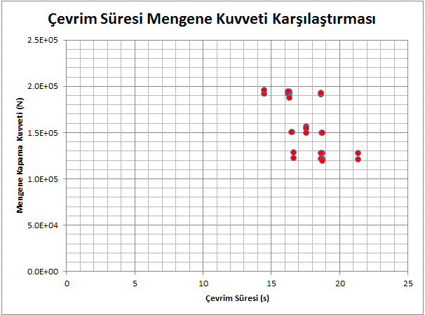
Þekil 12 Mengene Kuvveti ve Çevrim Süresi - DOE Analiz Sonuçlarý |
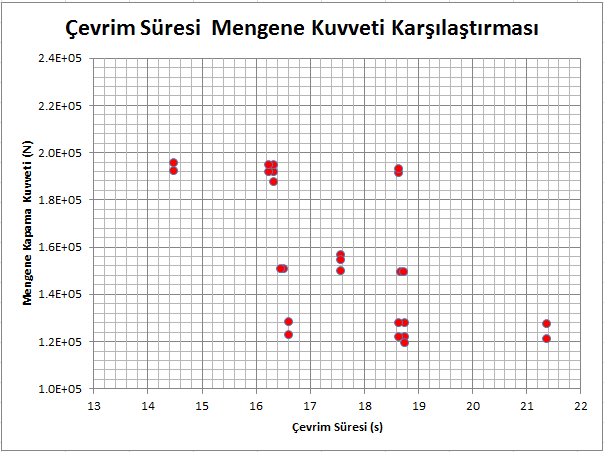
Þekil 13 Mengene Kuvveti ve Çevrim Süresi - DOE Analiz Sonuçlarý
(Noktalar kümesine odaklanýlmýþ görüntü) |
Sonuç:
Þekil 14’te verilen kýrmýzý noktalar mengene kuvveti ile çevrim süresi deðerlerinin birbirini nasýl etkilediðini göstermektedir. Verilen bazý noktalar düþük mengene kuvvetleri ile çalýþýldýðýnda çevrim süresinin uzadýðýný göstermektedir. Birbiri ile çeliþen amaçlarýn olduðu bu durumda optimum seçim diðer kriterler göz önünde bulundurularak, pareto frontier üzerinde yapýlmalýdýr.
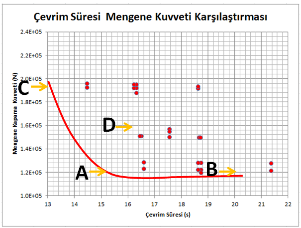
Þekil 14 Mengene Kuvveti ve Çevrim Süresi – Ýlk ve Optimum Noktalar
|
Grafik bilgileri doðrultusunda A, B, C, D noktalarý incelenecek olursa,
- B noktasý mengene kuvvetinin en düþük, ancak çevrim süresinin en uzun olduðu noktadýr.
- C noktasý çevrim süresinin en düþük, ancak mengene kuvvetinin en yüksek olduðu noktadýr.
- D noktasý mengene kuvvetinin de çevrim süresinin de fazla olduðu, verimsiz noktalardan biridir. Ayný zamanda bu nokta optimizasyon yapýlmadan belirlenen durumu göstermektedir.
- A noktasý ise hem en düþük mengene kuvvetini hem de en kýsa çevrim süresini belirten optimum noktadýr.
Tablo 4 A, B, C, ve D Noktalarýnýn Karþýlýk Geldiði Deðerler
Nokta |
Eriyik Sýcaklýðý |
Enjeksiyon Süresi (s) |
Soðutucu Sývý Sýcaklýklarý ½ (C) |
Mengene Kuvveti (N) |
Çevrim Süresi (s) |
A (4) |
275 |
0.25 |
15/15 |
1.24E+005 |
16.6 |
B (7) |
275 |
0.25 |
35/35 |
1.20E+005 |
21.4 |
C (0) |
235 |
0.25 |
15/15 |
1.96E+005 |
14.4 |
D (16) |
255 |
0.25 |
25/25 |
1.92E+005 |
18.6 |
Sayýsal modelleme ile elde edilen bilgi, doðru karar verebilmede büyük yarar saðlamaktadýr. Ýþletmelerin üretim kapasitesine göre, üretim makinelerinin mengene kuvvetinin mi yoksa çevrim zamanýnýn mý daha önemli olduðu da ayrýca göz önünde bulundurulabilir ve farklý iþletmeler için grafikte farklý noktalar optimum nokta olarak seçilebilir.
Hazýrlayan: Akro Mühendislik Ltd. Þti.
Akro Mühendislik Hakkýnda:
Akro Mühendislik Ltd. Þti. 2010 senesinde Yük. Mak. Müh. Can Özcan ve Dr. Mak. Müh. Metin Özen tarafýndan CAE alanýnda satýþ, eðitim ve danýþmanlýk hizmetleri vermek amacý ile kurulmuþtur. Simulation ürün ailesi üzerine odaklanmýþ Autodesk yetkili satýcýsý olarak, faaliyetlerini GOSB Teknopark Gebze’de sürdürmekte olan Akro Mühendislik; ayrýca Ozen Engineering (Kaliforniya) ile iþbirliði içerisinde yurtiçi ve yurtdýþý müþterilerine CAE konusunda hizmet sunmaktadýr. |